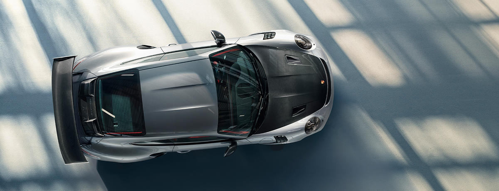
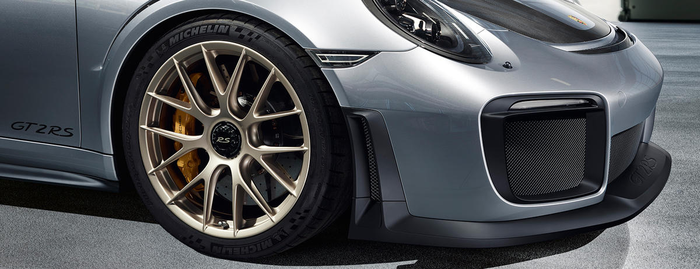

Der 911 GT2 RS ist der bis dato leistungsstärkste Elfer aus dem Hause Porsche - mit Fahrleistungen auf dem Niveau eines Supersportwagens.
Sein Design vereint die aerodynamischen Anforderungen von optimalem Abtrieb und maximaler Luftzufuhr. Der konsequente Leichtbau macht ihn zum sportlichen Puristen. Die hohe Kurvenstabilität verschafft dem Porsche 911 GT2 RS zusätzliche Sekunden Vorsprung. Sein 3,8-Liter-6-Zylinder-Biturbo-Motor mit 700 PS verleiht ihm genügend Autorität, um die Spitze zu behaupten.

Das Design des neuen 911 GT2 RS muss diametrale Anforderungen in Einklang bringen: Höchstgeschwindigkeit einerseits und eine rundstreckenoptimierte Aerodynamik andererseits.
Erkennungszeichen für extreme Leistungsfähigkeit: Die seitlichen Luftöffnungen für die Ladeluftkühlung – beim neuen 911 GT2 RS sind sie besonders groß ausgelegt. Der 911 GT2 RS setzt auf der besonders breiten Karosserie des 911 Turbo auf. Seine satte Formensprache zeigt sich am Heck auf den ersten Blick, die flach ausgeführten und abgedunkelten Heckleuchten in LED-Technik unterstreichen diese Anmutung. Der feststehende Heckflügel aus Carbon leistet seinen eigenen Beitrag zum leistungssportlichen Gesamteindruck.
Das vielleicht markanteste Detail der neuen Heckverkleidung: die Endrohrblenden der Abgasanlage, die den charakteristisch satten Sound des 911 GT2 RS erzeugt.
Das Gewicht ist für die Performance eines Hochleistungssportwagens wie dem 911 GT2 RS so essenziell wie sein Antrieb. Deshalb wurde jedes Bauteil auf die Waage gelegt und immer nach dem funktional leichtesten Material gesucht. Ergebnis: konsequenter Leichtbau bis ins kleinste Detail. Für ein Leistungsgewicht, das bei nur 2,1 kg/PS liegt und außerordentliche Performance ermöglicht.
Kotflügel vorne, Radhausentlüftungen, Oberschale der Außenspiegel, die Luftöffnungen der Fondseitenteile und Teile des Heckteils sind ebenso wie viele Interieur-Komponenten aus kohlefaserverstärktem Kunststoff gefertigt. Auch der Frontdeckel ist aus Carbon gefertigt und wie das Magnesiumdach in der Mitte konturiert. Die Sicke ist hierbei nicht nur ein optisches Differenzierungsmerkmal für Leichtbaukomponenten, sondern erhöht auch die Steifigkeit des Bauteils. Intelligenter Leichtbau in Aluminium-Stahl-Verbundbauweise hält das Fahrzeuggewicht niedrig.
Noch ein Minus, das zum Leistungsplus wird: Leichtbau-Polyurethan mit Glashohlkugeln und Kohlefaserelementen. Das leichte und dennoch extrem stabile High-Tech-Material ist bei Bug- und Heckverkleidung verbaut.
